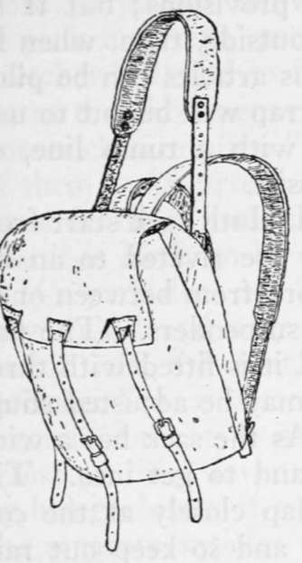
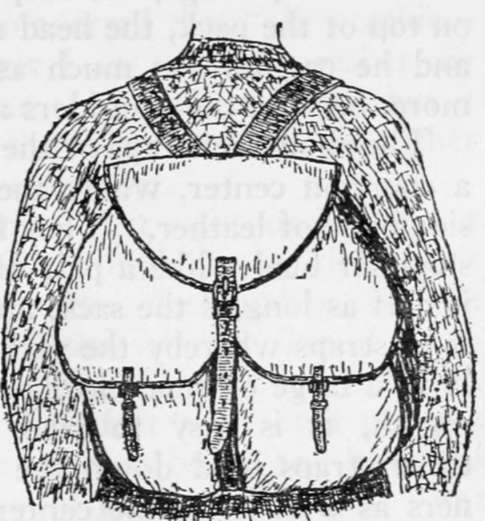

Packs For Pedestrians. Part 4
Description
This section is from the book "Camping And Woodcraft", by Horace Kephart. Also available from Amazon: Camping and Woodcraft.
Packs For Pedestrians. Part 4
For regular packing, when one sleeps out, the best pack sack at a moderate price that I know of is what is known as the Duluth, or, from its inventor, the Poirier pattern (Fig 32). Originally made for trappers, timber cruisers, and other professional woodsmen, it is now used by many sportsmen as well. The Duluth sack has no boxed sides, but is sewed up in the form of a simple bag> and so is made wider and higher than boxed ones of equal capacity.
Fig. 32. Duluth Pack Sack.
Fig. 33. Whelen Pack-Sack.
The advantage is that one's blanket, which goes in first, as a pad for the back, can be folded two feet square, or a little more, and consequently in fewer thicknesses; hence the bag packs flatter than a boxed one and does not bulge so far backward at the top. Poirier makes his pack sacks in three grades: (A) 12-oz. duck, heavy grain leather shoulder straps and canvas head strap, all straps and buckles fastened with copper rivets and burrs; (B) 10-oz. duck, canvas shoulder and head straps; (C) 10-oz. duck, canvas shoulder straps, no head strap. By all means get the A grade, as canvas slings will wrinkle when wet and cut the shoulders. The standard sizes and weights, in A grade, are as follows:
No. 1. 24 x 26 inches. 2 1/4 lbs. No. 2. 26 x 28 inches. 2 1/2 lbs. No. 3. 28 x 30 inches. 2 3/4 lbs.
For a pedestrian the No. 1 or No. 2 is large enough. A canoeist will find one of the larger ones ample to hold all the duffel for a single-handed cruise, and a week's provisions; but if he chooses to carry more on the outside, then, when he comes to a portage, the surplus articles can be piled on top ot the pack, the head strap will be put to use, and he can tote as much as with a tump line, or more, because the shoulders assist.
The shoulder straps of the Duluth sack start from a common center, where they are riveted to an inside piece of leather. They fork from between one's shoulder blades like a pair of suspenders. The flap is half as long as the sack, and it is fitted with three long straps whereby the sack may be adjusted snugly to a large or small load. As the sack has a wide mouth, it is easy to pack and to get into. The three straps hold down the flap closely at the corners as well as in the center, and so keep out rain and snow and prevent things spilling out. There is no throat piece; but a wise woodsman stows his perishables in light waterproof bags, anyway.
The pack designed by Captain Townsend Whelen. U. S. A., has an ingenious arrangement for regulating the size of the bag according to what is carried. It consists of a many-gored bag (Fig. 33), about 18 inches wide by 22 inches long without the gores. The bag can be let out enough to carry a small deer, feet up, or, by means of a strap that goes around it from top to bottom, it can be triced up, gores folded inside, until there is nothing of it but a little knapsack for carrying one's daily equipment. There are two roomy pockets on the outside, one of them, for the camera, made so that no water can get into it. The arrangement of straps is such that all the strain is put on them instead of on the canvas. Made of 12-oz. waterproof khaki duck, the Whelen pack sack weighs 2^ pounds.
Combination Pack Sacks
Since "an ounce in the morning is a pound before night" when one goes afoot, and "a mile uphill is five on the level," many ingenious contrivances have been devised to make one article in the outfit serve two or more purposes. So we have various combinations of pack and tent, pack and sleeping-bag, pack and stretcher-bed, and so forth. Though I do not go so far as the old-timer who averred that "all combination tricks are pizen," yet I am apt to be rather shy of them. An article can serve two purposes, but it can't do them both at the same time, and in either case it is likely to be a makeshift.
If a pack does not "ride" just right, or if it is not easy to fill and easy to get into at any time, it is faulty. If the tent, or the sleeping-bag, or the stretcher-bed, is altered from what it should be to accommodate it to some other use, it is vexatious. Most of these inventions defeat their own purpose by being almost, if not quite, as bulky and heavy as the separate articles would be if made right. For instance, you can use a sleeping-bag as a pack to stow your duffel in, but to carry it you must have a harness of some sort, and that harness will weigh over a pound. I would rather tote an extra pound and have a pack sack, for it is so much, more convenient. The notion that a sack is good for nothing in camp is wrong; you need a receptacle for everything that is not in present use, lest things get scattered and lost. Or, if long training has made you habitually careful in such a matter, you may do with that sack as 1 often do; turn it inside out, stuff it with dry leaves, put it under your filled pillow-bag, and sleep with your head comfortably high.
Pack Baskets
In the forests of the northern ern states and in the maritime provinces of Canada a favorite carrier is the pack basket, made smaller at the top than at the bottom, flattened on the back, and provided with a cover. An average size is about 18 inches high, 17 inches wide at the bottom and 15 at the top, by about 12 inches deep. Various sizes can be bought from outfitters in the cities, who also supply them with waterproof canvas covers (Fig. 34). One of the latter kind, holding 1 1/4 bushels, weighs 4 3/4 pounds. A larger one, 18 3/4 inches high by 18 by 14 1/2 inches, weighs 7 pounds; it fastens with lock-buckle and strap. Uncovered baskets weigh from 2 1/2 to 5 pounds, according to size. Common ones generally are too small at the top for easy stowage of bulky articles; but if the basket is made more than 12 inches deep it will drag back unmercifully on the shoulders.
Continue to: